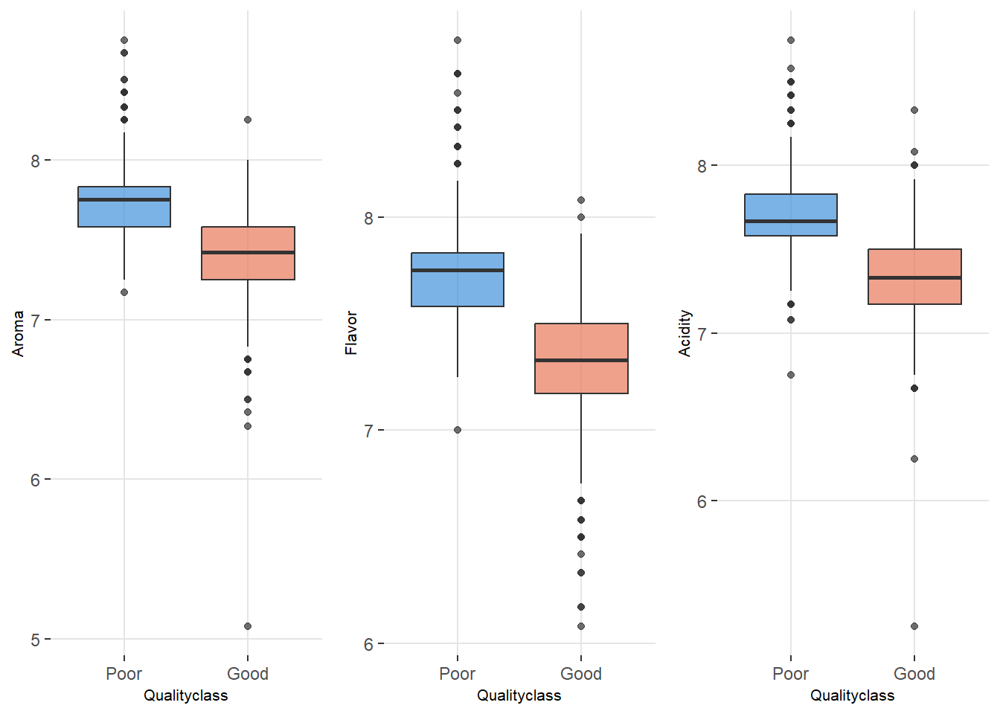
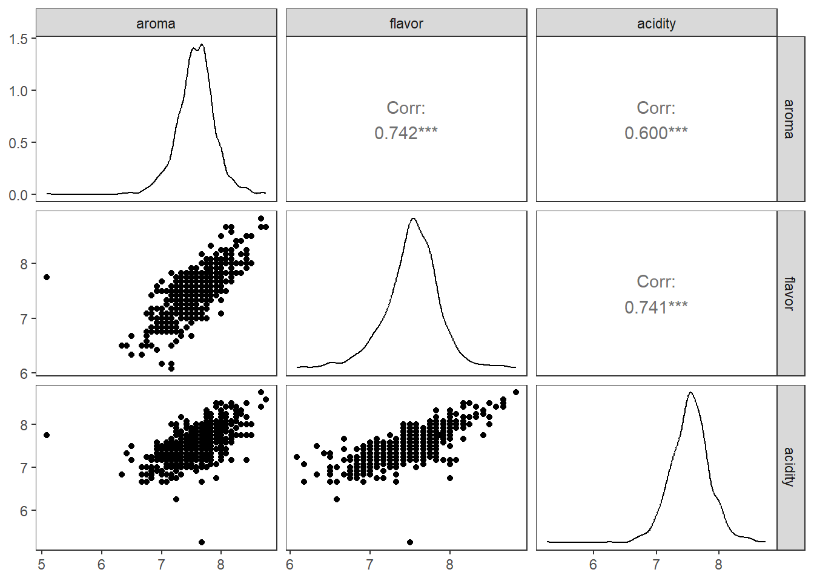
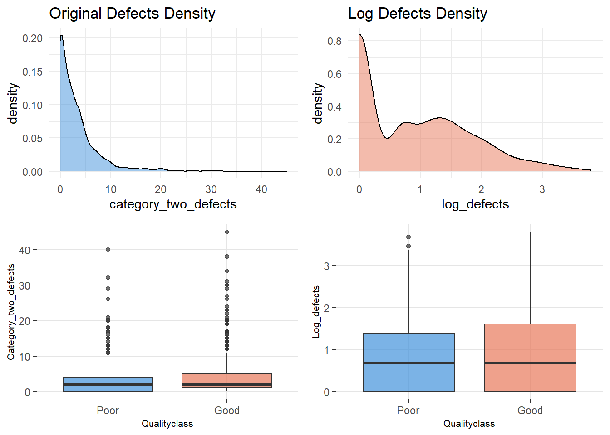
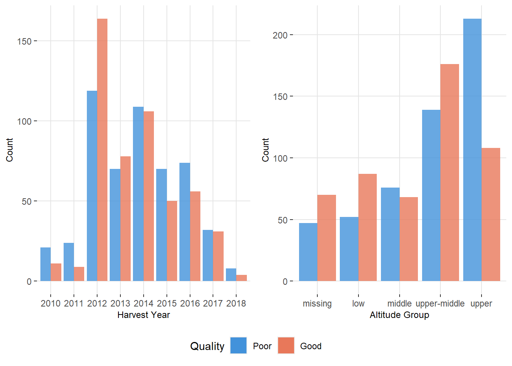

| Variable | Category | Frequency |
|---|---|---|
| quality_bin | 0 | 509 |
| quality_bin | 1 | 527 |
| altitude_group | lower altitude | 117 |
| altitude_group | middle altitude | 139 |
| altitude_group | missing altitude | 144 |
| altitude_group | upper-middle altitude | 315 |
| altitude_group | upper altitude | 321 |
| harvested | 2010 | 32 |
| harvested | 2011 | 33 |
| harvested | 2012 | 283 |
| harvested | 2013 | 148 |
| harvested | 2014 | 215 |
| harvested | 2015 | 120 |
| harvested | 2016 | 130 |
| harvested | 2017 | 63 |
| harvested | 2018 | 12 |
exploratory GP11
Exploratory Analysis
First, we performed data preprocessing to prepare the dataset for analysis. The original categorical variable Qualityclass was recoded into a binary variable quality_bin, where “Poor” quality was coded as 0 and “Good” as 1, to serve as the binary outcome for logistic regression. The harvested variable, originally an integer representing harvest year, was converted to a categorical factor. Additionally, altitude_mean_meters was grouped into five categories (lower altitude, middle altitude, upper-middle altitude, upper altitude, and missing altitude) to explore non-linear relationships between elevation and coffee quality. Note that there are approximately 14% missing values in the variable of altitude. To avoid sample size loss and eliminate confounding interference caused by missing altitude information, it is set as an independent group for subsequent analysis. No missing values were present in the key variables used for modeling.
Table 1 shows the frequency of three categorical variables. The binary variable quality_bin is nearly balanced, with 509 poor-quality(0) and 527 good-quality(1) samples, ensuring a robust baseline for logistic regression. For mean-altitude of the growers farm(in meters), most samples are concentrated at higher elevations: upper altitude has 321 samples and upper-middle altitude has 315 samples, indicating a potential focus on high-altitude coffee production. Samples in lower and middle altitude groups are smaller,which is 117 and 139. 144 samples have missing altitude data, which is used as the reference group. Harvest year span 2010-2018, with the largest concentrations in 2012-2014, respectively has 283, 148 and 215 samples. Fewer samples in early(2010-2011) and late(2017-2018) years.
| Variable | Mean | Median | SD | Min | Max | IQR |
|---|---|---|---|---|---|---|
| aroma | 7.57 | 7.58 | 0.32 | 5.08 | 8.75 | 0.33 |
| flavor | 7.52 | 7.58 | 0.34 | 6.08 | 8.83 | 0.42 |
| acidity | 7.54 | 7.58 | 0.32 | 5.25 | 8.75 | 0.42 |
| category_two_defects | 3.55 | 2.00 | 5.15 | 0.00 | 45.00 | 4.00 |
Table 2 shows the descriptive statistics of the key quantitative variables of coffee samples, including three sensory quality indicators and one defect count indicator. Aroma scores fall in a moderate-to-high range with a mean value of 7.57 and a median value of 7.58. The standard deviation is 0.32 and the IQR is 0.33, both is the lowest among all variables, indicating minimal variation between samples and stable aroma performance across the dataset.
Flavor scores show a similar moderate-to-high level with a mean of 7.52 and a median of 7.58. The standard deviation is 0.34 and the IQR is 0.42, reflecting weak differences in flavor characteristics among different samples.
Acidity also maintains a moderate-to-high scoring level, with a mean of 7.54 and a median of 7.58, while the standard deviations of 0.32 and IQR of 0.42. That point to a highly consistent acidity performance across all coffee samples.
The count of category_two_defects performs an obvious right-skewed distribution with a mean of 3.55 and a median of 2. The standard deviation reaches 5.15 and the maximum value is 45, revealing significant variation in defect counts between samples and the presence of extreme high defect samples.
Overall, the three sensory quality indicators of the coffee samples all show well at a moderate-to-high level with low dispersion and high consistency, while the category two defect count shows strong heterogeneity with a right-skewed distribution and extreme values, maybe log transformation is needed.

This set of boxplots clearly illustrates the real differences in aroma, flavor, acidity, and defect count between high-quality coffee and low-quality coffee. The overall level of aroma, flavor, and acidity in the high-quality group is higher, the data distribution is more concentrated, and the quality performance is more stable. The sensory indicators of the low-quality group are significantly lower, and the number of defects is much higher than that of the high-quality group, with greater data fluctuations and more outliers. Overall, these variables can effectively distinguish the quality level of coffee and provide intuitive basis for subsequent statistical analysis.

Figure 2 performs that there is a significant positive correlation between the three sensory indicators of coffee aroma, flavor, and acidity, with correlation coefficients above 0.6. The distribution of each variable is concentrated and the shape is stable. This high correlation suggests that we should pay attention to multicollinearity issues to ensure the stability and reliability of model parameter estimation.

Figure 3 highlights the distribution characteristics and inter group differences of category_two_defects in the batch of coffee tested before and after logarithmic transformation. The original defects count shows a severe right skewed distribution, with a large number of extreme values, making it difficult to visually reflect the differences between groups in the box plot. After logarithmic transformation, the skewness of the data is significantly reduced, and the distribution becomes more concentrated and symmetrical. The transformed boxplot clearly reveals that the median number of defects in the Poor group is higher than that in the Good group, and the differences between groups are more distinct. This not only preserves the core information of the data, but also provides a more reasonable distribution pattern for subsequent statistical modeling.

Figure 4 clearly shows the distribution differences of coffee quality in harvest years and altitude gradients. On the year dimension, the quantity of high-quality coffee and low-quality coffee fluctuates between different years, with some years having a higher proportion of high-quality coffee, reflecting the quality differences between years. In terms of altitude, there are significantly more low-quality coffee in high-altitude areas, and high-quality coffee is also concentrated in the mid to high altitude range, while the quality distribution is relatively balanced in samples with low altitude and missing altitude data. Overall, the correlation between altitude gradient and coffee quality is more intuitive, and the quality differentiation of high-altitude samples is more significant. The year reflects the annual fluctuation characteristics of quality.